Discrete Global Grid Systems
as the Foundation for
Planetary-Scale GeoAI
A systematic empirical evaluation of DGGS architectures across geometric fidelity, topological resilience, computational throughput, and relational performance — at 10 million point scale.
Is Your GeoAI Solving
for Earth… or Flat Maps?
Every GIS dataset you have ever worked with assumes the Earth is flat somewhere in the pipeline.
It represents varying geographic reality.
- Web Mercator (EPSG:3857) is the global default since Google Maps (2005) — distortion compounds exponentially toward the poles
- UTM Zone 17N (Florida) — a 10m×10m pixel at the central meridian (St. Augustine) covers 99.85 m²; the same pixel at the zone edge (~Tallahassee) covers 100.08 m². A
0.23%area discrepancy — every single pixel. - At scale: 10m pixels → 0.23 m²/pixel error · 100m pixels → 23 m²/pixel. Over 1 km² → 2,300 m² of systematic UTM error
- Models waste parameters learning to unwarp projection geometry — not learning geographic processes
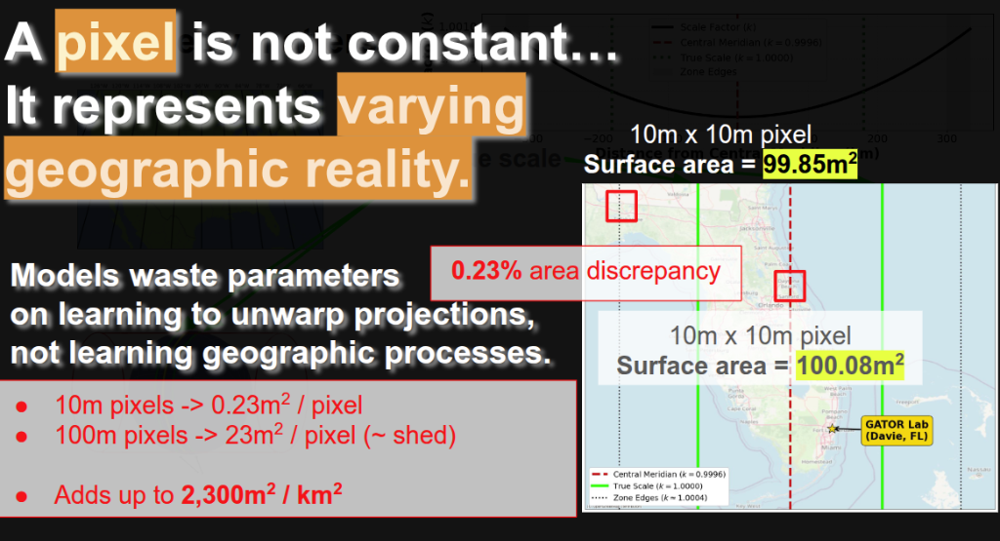
The world has no "edges"
- Flat maps cut the Pacific Ocean in half at the Date Line — a seam that does not exist on Earth
- GeoAI models trained on these maps must learn wraparound workarounds as an implicit skill
- We are forcing models to solve a problem that doesn't exist on a sphere
- Every surveying coordinate you measure exists on a spheroid — why index it on a plane?
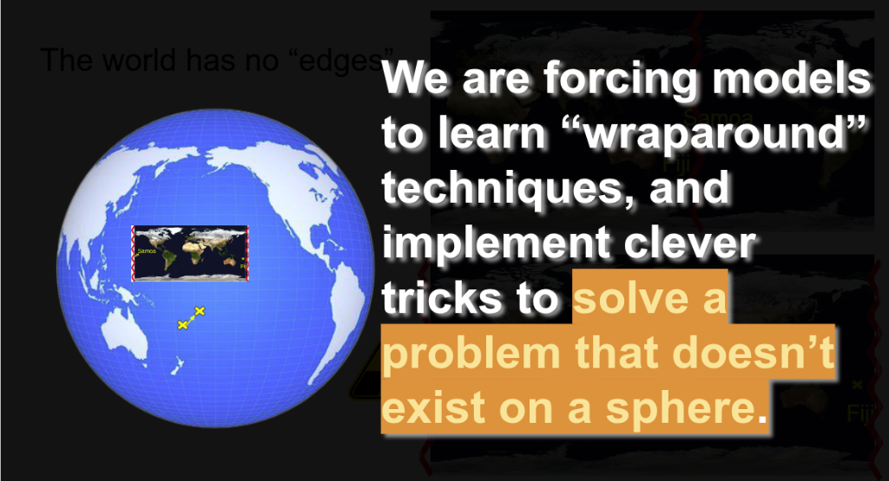
DGGS is not just clever indexing.
- Topological continuity: no poles, no seams, no projected infinity — true for all DGGS
- Hierarchical multi-scale efficiency: children nest perfectly inside parents — true for all DGGS
- Spatio-temporal persistence: cell IDs are stable across time, enabling change detection — true for all DGGS
- Metric stationarity: equal-area DGGS only — every cell covers the same physical surface area globally. Not all DGGS guarantee this; S2 and H3 approximate it, ISEA4H enforces it analytically.
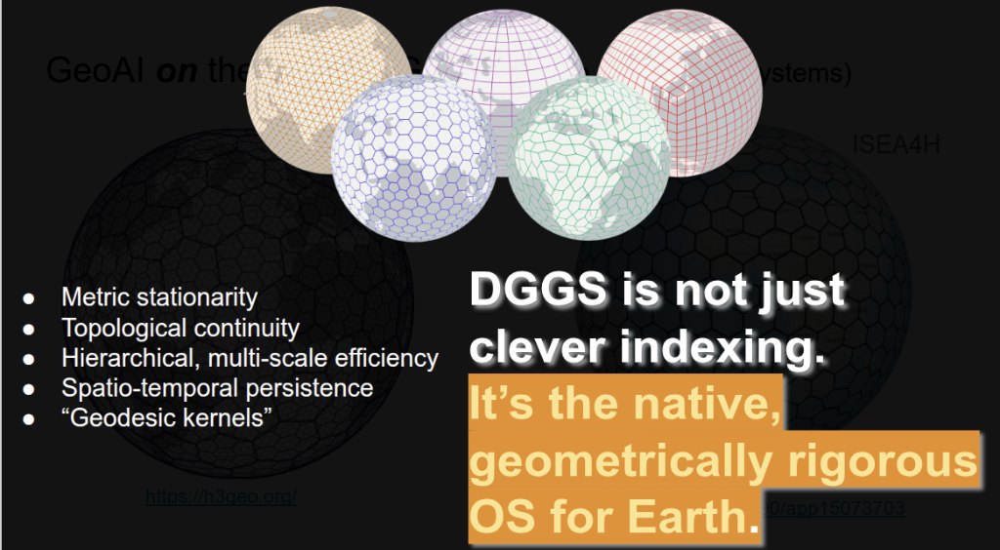
How Spatial Indexes
Actually Work
From quadtrees and Hilbert curves on a 2D plane, to icosahedral tessellations on a sphere.
Step 1 — The Quadtree
Spatial indexing starts with recursively dividing space into 4 equal quadrants. Each cell has exactly 4 children at the next resolution level.
- Intuitive hierarchy: zoom in = subdivide. Zoom out = merge. Perfectly nested children.
- The hidden problem: Two adjacent cells on the ground (e.g. cells 3 and 4) may be stored far apart in memory — no spatial locality in the numeric IDs
- Consequence for ML: If your cell index is a feature, neighbors are numerically distant. The model cannot learn spatial proximity from the index alone.
- The solution: traverse the quadtree in a smarter order — the Hilbert Curve
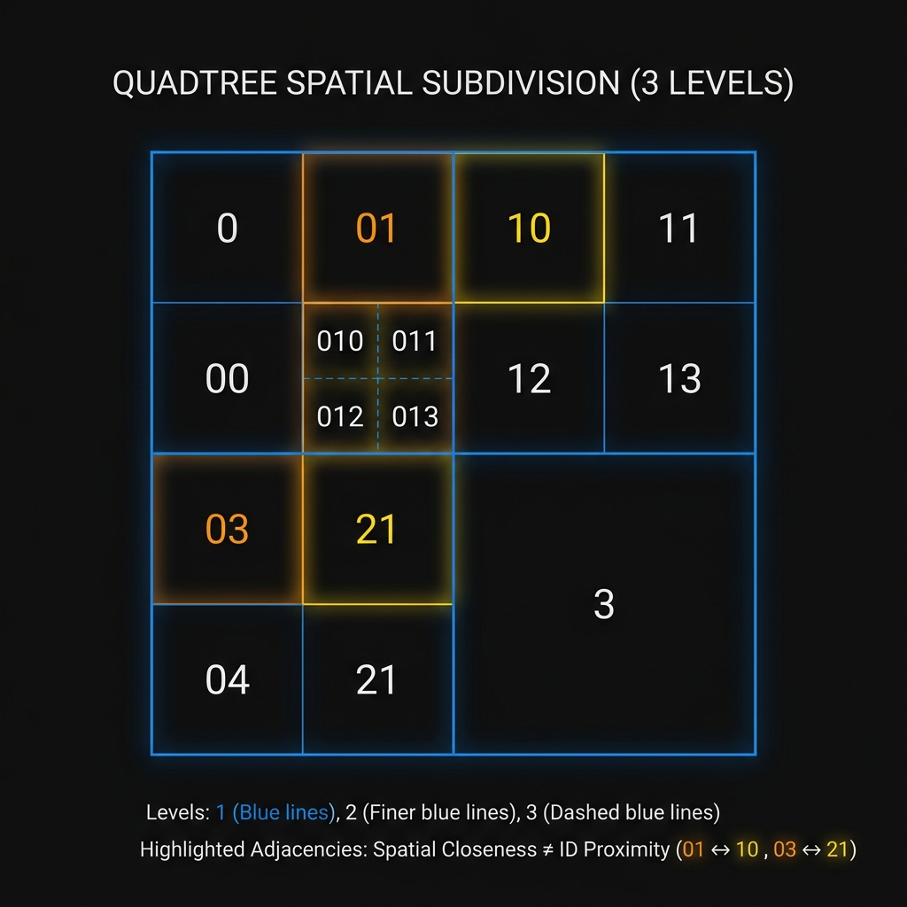
Quadtree recursive subdivision — highlighted cells (01↔10, 03↔21) are spatially adjacent but numerically distant
Step 2 — The Hilbert Curve
- Space-filling curve: visits every quadtree cell exactly once, snaking through space in a U-shaped fractal path
- Spatial locality preserved: nearby cells in space = nearby cells in the 1D index. The rainbow strip below shows consecutive index positions — geographically adjacent cells share similar colors.
- For GeoAI: The Hilbert index is the natural spatial embedding. Spatial proximity is encoded numerically.
Google S2applies this on each face of its spherical cube. - Geohash uses Z-order (Morton) curve — similar idea, but Hilbert achieves better locality at the same bit-depth
Step 3 — Wrapping the index onto a sphere
The base polyhedron is inscribed inside the sphere. Each face is then recursively subdivided and projected outward — the polyhedron choice determines cell shape, distortion location, and singularity handling.

The three base polyhedra inscribed in a sphere — each defines a fundamentally different tessellation geometry
- Hexagons minimize edge-to-area ratio — closest approximation to a circle on a sphere
- Equal-area projection ensures every cell covers the same physical surface area — analytically enforced in ISEA4H, approximated in H3/S2
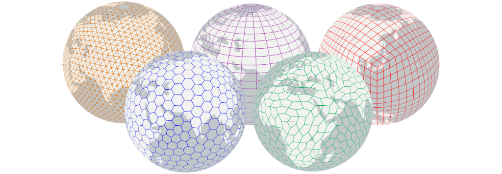
Credit: vgrid / nicoreed · github.com/nicoreed/vgrid
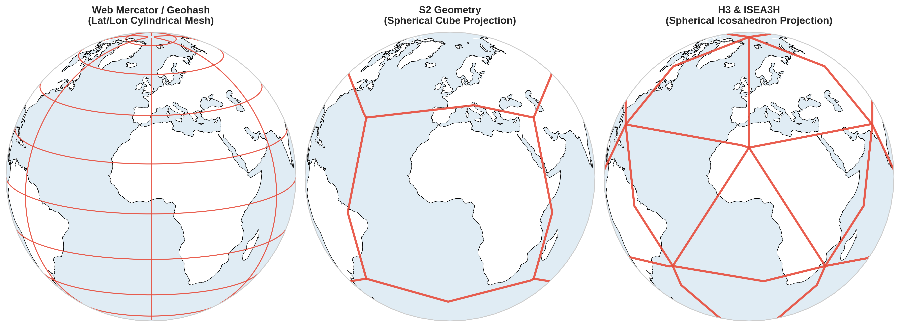
The OGC DGGS Standard (Topic 21) formalizes these architectures — the EPSG registry of the AI era
Benchmarking the Field —
What We Actually Found
10M Fibonacci sphere points + 10M real-world POIs. 6 grids. 4 experiment dimensions. Open source, reproducible.
The Fibonacci Sphere: quasi-uniform evaluation corpus
Standard lat/lon grid sampling overrepresents the poles — meridians converge, so each point near the poles covers far less area. Any benchmark using naive lat/lon sampling is biased.
- Fibonacci Sphere distributes N points via golden-angle spiral — each point maximally avoids its neighbors globally, yielding quasi-uniform surface coverage
- Result: equal physical area per point everywhere on the globe — no polar overrepresentation, no equatorial gaps
- Experiments 1–3: 10,000,000 Fibonacci sphere points, evaluated independently of any real-world point distribution bias
- Experiment 4 (Relational): 10M Foursquare OS Places real-world POIs over 15 European nations — testing realistic production workloads
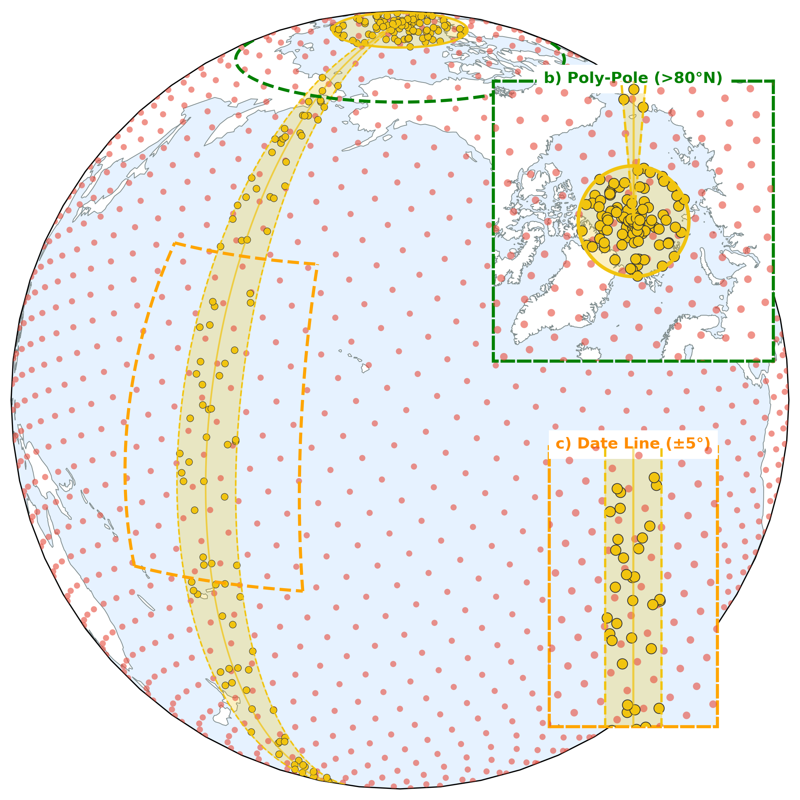
Fibonacci Sphere (left) vs. uniform lat/lon grid sampling (right) — same N points, radically different polar density
dggs-bench — the evaluation framework

Fig. 2 — The API fragmentation problem dggs-bench solves: H3, S2, rHEALPix, ISEA4H, Geohash and XYZ Tiles each use radically different encoding APIs — unified under a single benchmark interface.
Experiment 1: Does the grid respect the Earth?
- Two metrics: (A) Area ratio — cell physical area vs. true spheroidal area. (B) Angular deviation — how far cell geometry departs from isotropic (circle-like) shape.
- H3 & ISEA4H held area ratios within ±2% globally — the equal-area guarantee holds analytically
- XYZ tiles reached 3.5× area distortion at 60°N — a model trained on Arctic satellite imagery silently covers 3.5× more physical area per pixel than intended
- The Planar Fallacy: Geohash and XYZ are angularly perfect — on a projected plane that does not physically exist. Mathematical conformality on a fiction.
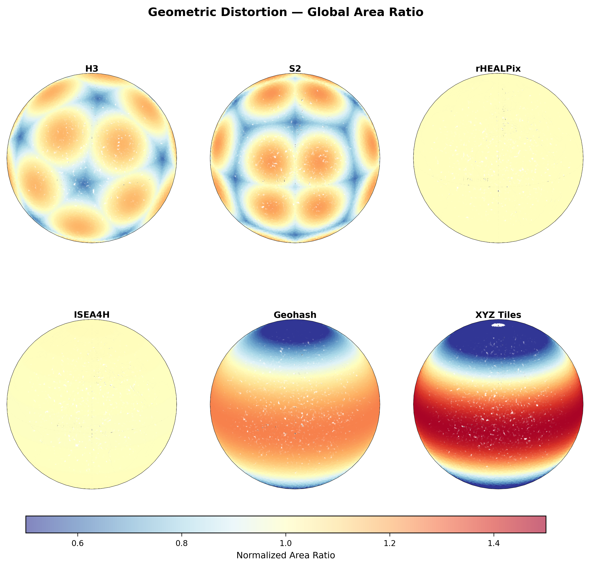
Fig. 3 — Global area distortion heatmaps
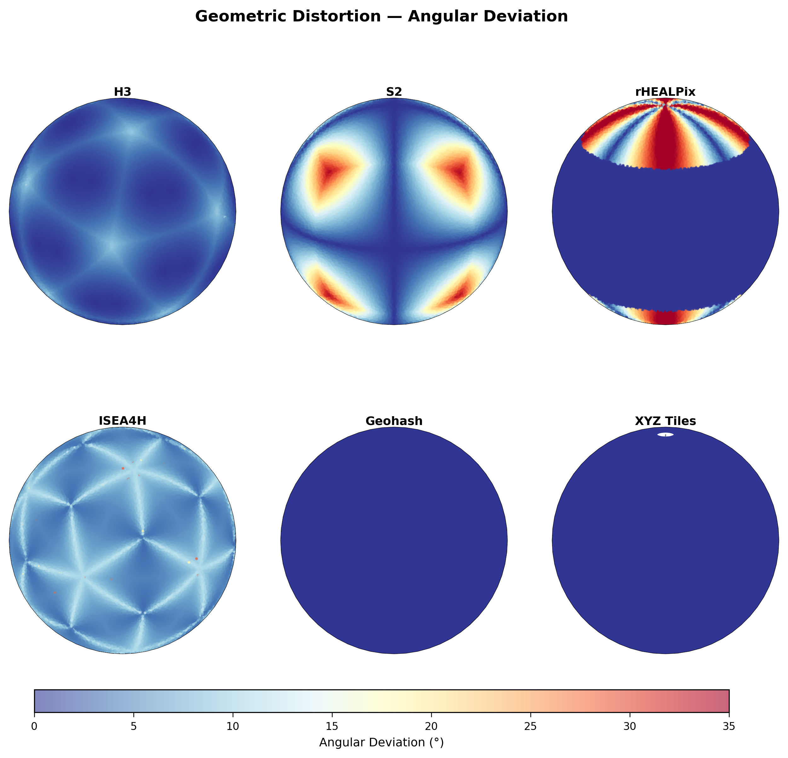
Fig. 4 — Angular deviation orthographic plots — Geohash/XYZ show latitudinally banded distortion
Experiment 2: Does the grid survive the real world?
Stress-testing at geographic singularities: North Pole, South Pole, Antimeridian, and a mid-ocean Control group.
- XYZ Tiles process-crashed at polar limits (>±85.05°) — Web Mercator resolves to mathematical infinity
- rHEALPix showed a 9× latency spike at both Poles ($p < 0.001$) from cylindrical-to-cap branch switching
- S2 collapsed to near-zero neighbor spacing at the Poles ($\sigma \approx 5m$) but exploded at the Date Line ($\sigma \approx 178m$) — its cube corners
- ISEA4H showed artificially suppressed Date Line variance ($1011m → 126m$, $p < 0.001$) — the icosahedral unfolding seam artifact
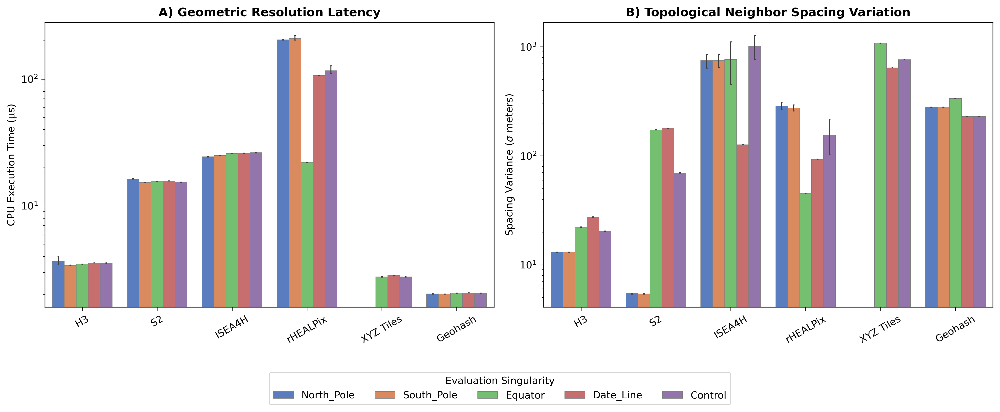
Fig. 5 — Resolution latency (A) and k-ring spacing variance (B) at geographic singularities.
Experiment 3: How fast can it encode the planet?
Pure encoding, decoding, k-ring traversal, and parent resolution at 10M Fibonacci points — no I/O, pure algorithmic throughput.
| Grid | pts/sec (encode) | k-ring (sec/10M) |
|---|---|---|
| Geohash | 1,667,130 | 13.8s |
| XYZ Tiles | 968,596 †crash | 16.1s |
| H3 | 850,175 | 26.1s |
| S2 | 225,202 | 104.5s |
| rHEALPix | 77,057 | 692.4s |
| ISEA4H | 47,030 | 191.2s |
† XYZ Tiles: 99.6% success rate — crashes at polar latitudes (>±85.05°, Web Mercator infinity)
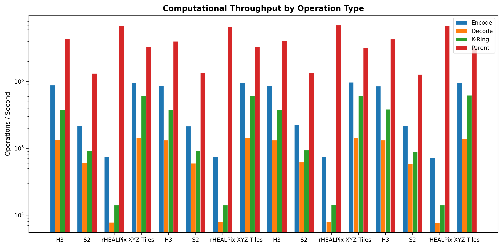
Fig. 6 — Full throughput breakdown: encoding, decoding, k-ring, parent resolution
Experiment 4: The ETL Tax vs. Query Reward
Simulating industrial data-lake workloads using Foursquare OS Places POIs encoded into DuckDB over a 15-nation European study area.
One-time encoding cost: 0.8s (H3) to 13.6s (rHEALPix) for the full dataset. Paid once, never repeated.
Spatial JOIN speed after indexing: 23–317× speedup over raw vector geometry joins.
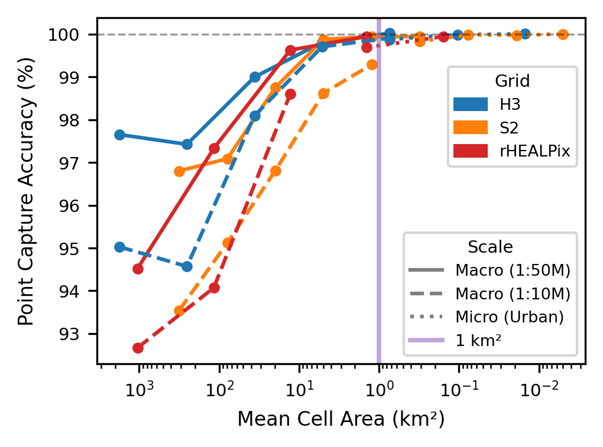
Fig. 7a — Point capture accuracy vs. mean cell area. H3 and S2 converge to 100% fastest.
Polygon covering: following complex boundaries
- The Coastline Paradox: finer resolution cells require exponentially more cells to trace an irregular boundary — the measured perimeter grows without bound as resolution increases
- This drives the ETL Tax — covering France's coastline at 1km² requires orders of magnitude more DGGS cells than at 100km²
- H3 (hexagonal) provided best covering efficiency at all scales — hexagons minimize the cells needed to trace curved coastlines
- rHEALPix (square) slowest: 4-connectivity squares require more cells to approximate any curve
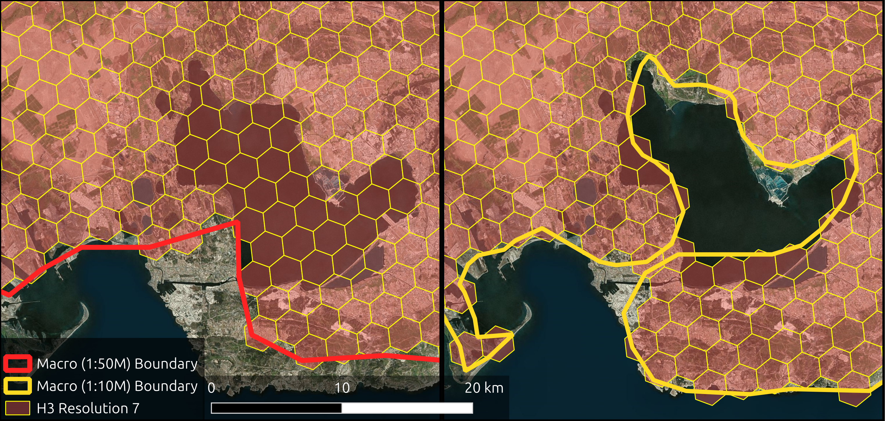
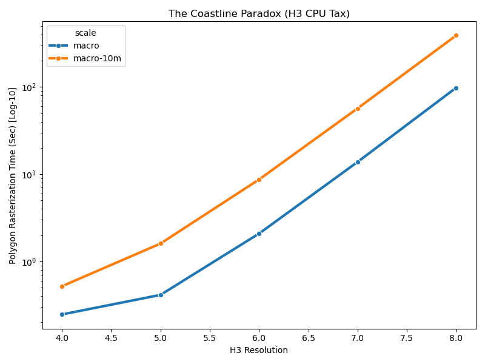
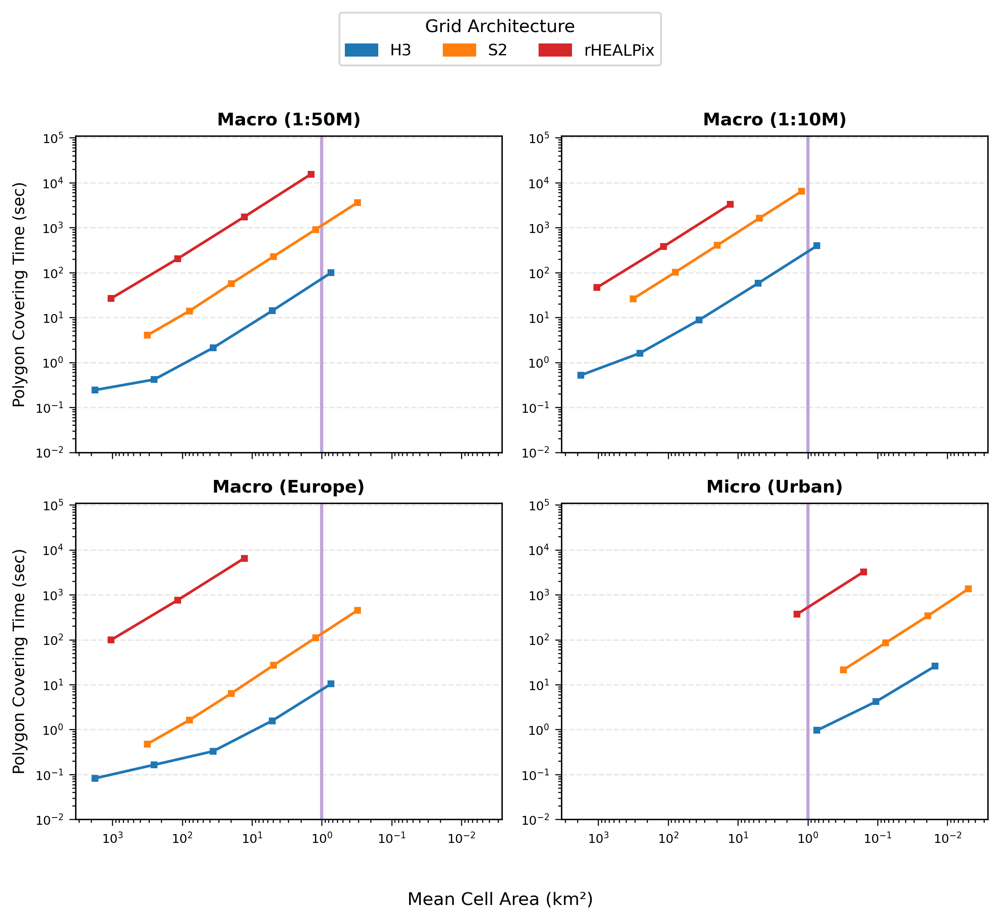
Why This Is the Foundation
for GeoAI
Connecting the benchmarks to the spatial AI systems being built today — and tomorrow.
The grid is the inductive bias
Equal-area cells → identical physical coverage per training sample. No implicit polar weighting.
DGGS hierarchy = physically meaningful feature pooling — anchored to surface area, not pixel count.
Any dataset — sensor, satellite, survey, census — spatially joined using a single numeric cell ID.
Bürger & Telteu (2024, Hydrology & Earth System Sciences) replaced lat–lon grids with ISEA3H geodesic hexagons in a global irrigation expansion random forest model — predictive accuracy improved by up to 28%. The grid choice changed the science.
doi:10.5194/hess-28-5049-2024
Open Source Framework
pip install dggs-bench
Paper
ACM Transactions on Spatial Algorithms and Systems, 2026
Research Group
gatorlab.io
out of convenience and legacy.
Planetary-scale models must use equal-area DGGS. The grid is not a preprocessing detail — it is the scientific foundation.
Every coordinate you collect is on a spheroid. Index it on a spheroid. The UTM zones, the dateline seam — these are artifacts of paper maps.
pip install dggs-bench · H3, S2, rHEALPix, ISEA4H benchmarked and documented. The transition has never been more accessible.
Geospatial AI · DGGS · Planetary-scale spatial analytics · Open geospatial infrastructure
Integrating DGGS into surveying or geomatics workflows? Happy to collaborate on applied research and open-source tooling.